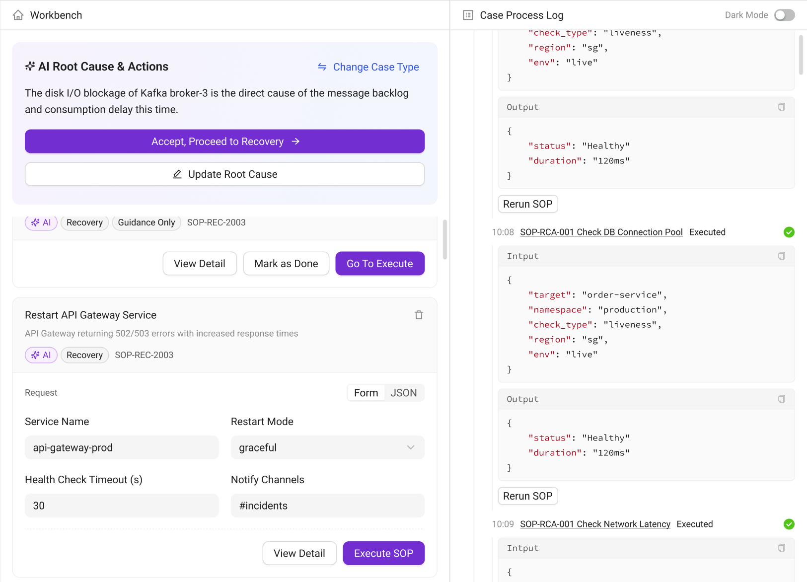

01 / 能跑起来不等于值得用
从 Figma 到代码，三条路径
我试过三条路：让 CodexOpenAI 的编程智能体：可读取代码库、执行任务；实验中用它操作 Figma 画布与生成界面。 通过 Figma MCP通过 MCP 协议让 AI 直接操作 Figma 画布、读取和生成设计内容。 操作画布，用整理好的 Skill给 AI 用的技能包：把规范、知识与流程整理成可调用的指令，约束 AI 按团队方式工作。 约束生成；把设计要求写成 Design MD设计要求的说明文档：把基础规范、产品知识与项目上下文写成 AI 可读的描述，用于约束生成。，交给 Figma MakeFigma 的 AI 生成能力：从描述与参考生成可运行、可交互的界面方案。；再让 CodexOpenAI 的编程智能体：可读取代码库、执行任务；实验中用它操作 Figma 画布与生成界面。 直接进入 React前端开发框架，以组件方式构建界面；设计系统按 React 组件落地到生产工程。 工程，按现有组件生成界面。
三条路的速度和质量各不相同：Codex 通过 Figma MCP 操作画布这条路，等一份稿子比我自己画还慢；用 Figma MakeFigma 的 AI 生成能力：从描述与参考生成可运行、可交互的界面方案。 或让 CodexOpenAI 的编程智能体：可读取代码库、执行任务；实验中用它操作 Figma 画布与生成界面。 直接生成，其实很快；要求符合规范、在已有 React 组件的工程里生成，时间可以接受——但只擅长标准界面，稍微需要创造性的需求，完成得都不行。约束多有好有坏，得看诉求是什么。
我没有停在加长提示词上，而是把基础规范、产品知识和当前项目材料分开，先看结构方向、再补细节。方向还没定就绑定所有 Token，只会让之后的推翻更贵。
02 / 规范存得下经验，替不了判断
规范能写进去多少
为了避免 AI 把所有页面都做成同一种后台，我写进去的内容越来越多：产品里有哪些对象，哪些状态不能混淆，什么页面适合用表格。但规则写得再完整，也没有让我放心交出全部判断——规范保存的是已经形成的经验，遇到新需求，还要判断经验是否适用。
Ask以 AI 逐步承接一线值班工作为目标，连接问题受理、诊断与处置，在关键节点保留人的授权、纠正与接管。 的审批场景就是例子：按钮和弹窗都可能符合规范，用户却未必看得清自己批准了什么。接受诊断原因，和同意执行恢复操作，是两个不同的决定；合成一个「确认」，界面更简洁，人的选择却变少了。这类取舍只能结合任务判断，无法靠控件是否合规来验收。
Ask · 高保真设计方案局部

03 / 债在之后慢慢还
被省下的工作去了哪里
我做的这一系列探索，发生在「设计」还被承认应该独立存在的时期。到了 2026 年下半年，情况变了：设计环节在很多流程里被直接跳过，我所在的设计团队也在这一轮被解散。变化有两个背景：一部分产品团队认为 AI 生产的结果已经够用，但很多问题他们看不出来，用户侧的负面反馈也被忽略了；同时，工程型产品越来越少被真人访问，用户更多是让 agent 直接来操作。
设计环节被跳过之后，那些没被回答的问题并没有消失：用户要额外辨认操作范围，遇到异常只能从头再来。债不是上线那天就爆，是在之后的使用和维护里慢慢还的。
这件事和岗位名称没有必然关系：产品、研发同样能做出好的设计判断。只要流程变了，就要重新确认谁来理解用户任务、谁来比较取舍、谁来检查那些没有走通的情况。
这套方法值不值得继续，要把生成、纠正和维护的成本放在一起看。在那之前，我不会把判断交给一套写全了的规范。
相关文件涉及企业内部信息，可在面试交流中结合脱敏处理后的材料展开介绍。